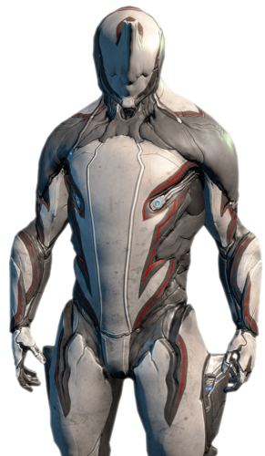
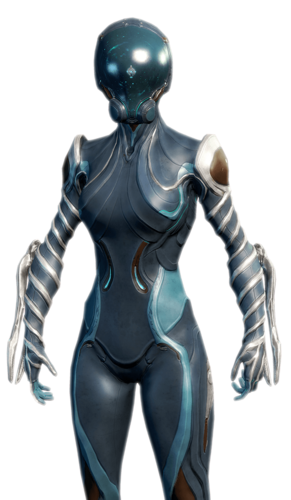
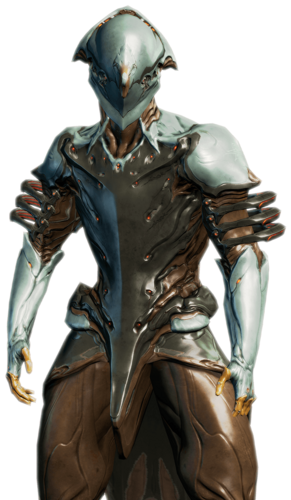

Awakening is the introduction quest to WARFRAME, designed to allow players to familiarize themselves with the basics of controls and combat.
First, Cinematic intro plays:
After the cinematic intro, the player is prompted to choose their starter Warframe:



The chosen Warframe awakes in the midst of the crowd of Grineer. They are approached by Captain Vor, who intends to capture the Warframe by planting an Ascaris device on them before leaving. The Lotus cannot allow the Warframe to be captured by Vor, as losing them is bad enough already. She surges the Warframe's systems remotely, allowing the Tenno to fight back against the soldiers nearby using their innate powers.
With the immediate threat dispatched, the Tenno must now find weapons and escape. This level plays out as a tutorial, with weak enemies and gradual progression through gameplay elements continuing into jumping, melee weapons, double jumping, crouching, sliding, secondary weapons, wall dashing, bullet jumping, primary weapons, aim gliding, and finally hacking and timed defense.
Upon arrival at the checkpoint, Vor uses his Janus Key to destroy the first extraction craft before the Tenno can escape. After fighting back and depleting Vor's shields, he expresses great interest in the Tenno before leaving. The Tenno soon finds their old ship, an Orokin-Era Liset, impounded by the Grineer. Ordis its onboard AI (or "Cephalon"), originally mistakes the Tenno (referred to as "the Operator") for a Grineer soldier, but quickly comes around when it realizes their true identity, and begins charging the ship's engines. The Tenno must hold out against Grineer soldiers for a couple of minutes whilst the drives charge and then escapes.
Despite the Tenno's escape, Vor nonetheless declares that he has marked them.